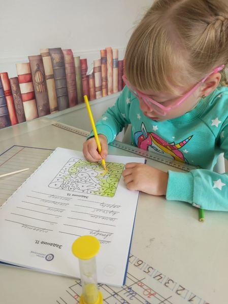
Скорочтение 4–5 и 6–7 лет
4–7 лет
4–5 лет — буквы, слоговое чтение и счёт. 6–7 лет — уверенное чтение от 50 слов в минуту к выпуску, память и концентрация.
6 800 ₽ 8 занятий в месяцЗаписаться
Класс интеллектуального развития · Кемерово
скорочтение, каллиграфия, ментальная арифметика и подготовка к школе — с 4 до 17 лет
Скорочтение — это не только быстрое чтение, но и гармоничное развитие полушарий мозга: ребёнок читает качественно, запоминает и понимает прочитанное. Группы по 3–4 человека, занятия офлайн и онлайн. Пробное занятие — бесплатно.
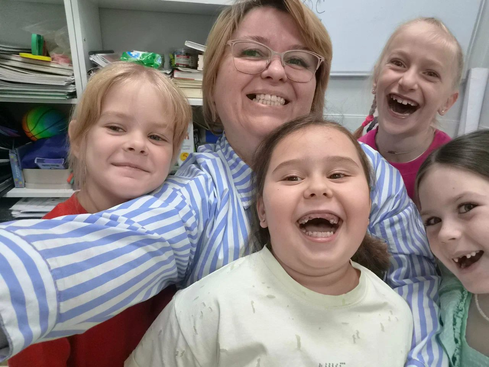
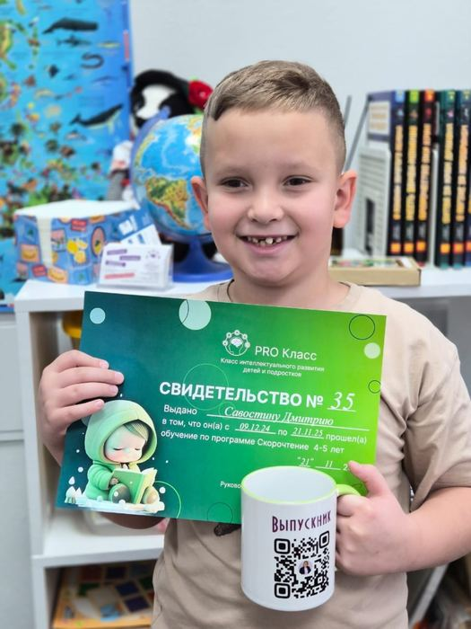
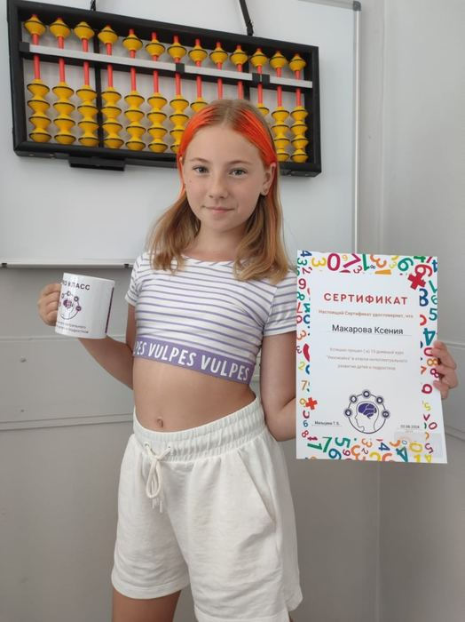
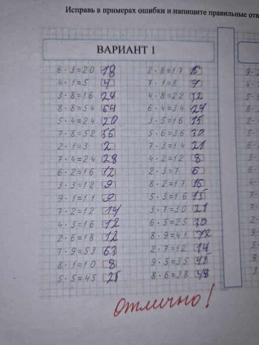
«Разогнались до 53 слов в минуту»Наталья Лысак, 2ГИС — после курса «Подготовка к школе»
Тренажёр
С таких упражнений начинается скорочтение — они тренируют внимание и боковое зрение. Нажимайте числа от 1 до 25 по порядку, не отводя взгляд от центра. Время пошло с первого нажатия.
Это лишь одно упражнение из курса. Остальные — на пробном занятии, бесплатно.
Курсы и цены
Цены — из нашей витрины ВКонтакте. Программы с поурочным планированием: обычно 8 занятий в месяц, 2 раза в неделю.

4–7 лет
4–5 лет — буквы, слоговое чтение и счёт. 6–7 лет — уверенное чтение от 50 слов в минуту к выпуску, память и концентрация.
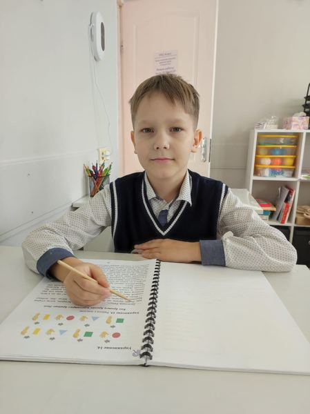
8–12 лет
Скорость чтения в 3–4 раза выше начального уровня, работа с текстом, пересказ, развитие обоих полушарий.
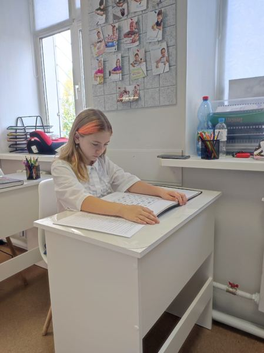
13–17 лет
36 занятий: скорость до 700 слов в минуту, работа с разными текстами, память в 3–4 раза больше.
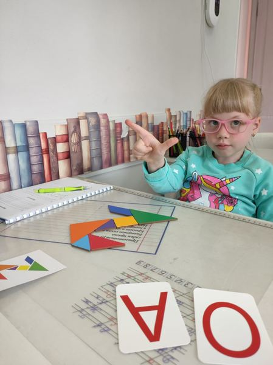
дошкольники · 60 минут, 2 раза в неделю
Авторская методика Регины Казарян: чтение, письмо, счёт, окружающий мир. 48 занятий за 6 месяцев, группы по 3–4 человека.
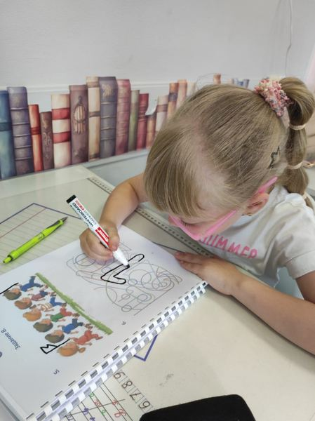
дошкольники
Мелкая моторика, координация, правильный захват ручки — фундамент красивого почерка.
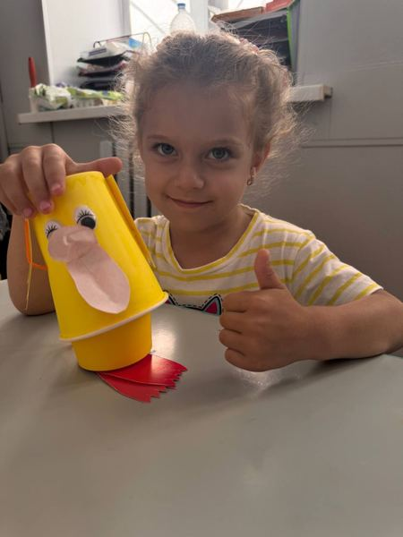
3–5 лет
Курс по сказкам Сутеева, Бианки, Мамина-Сибиряка: логика, внимание, память, творческие задания и подвижные игры.
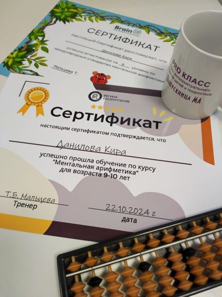
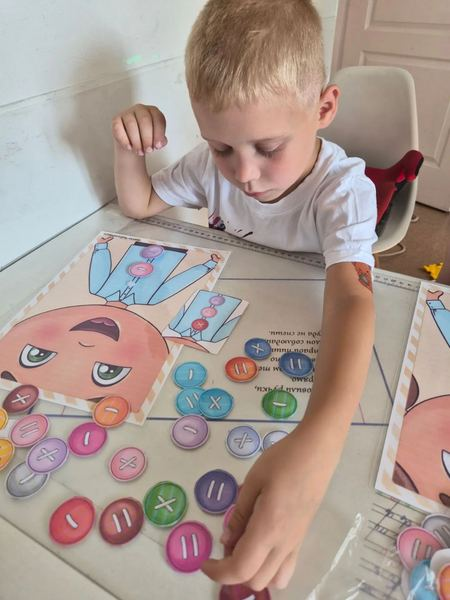
8–12 лет · 60 минут
Таблица умножения через истории и картинки. Группа — всего 4 человека. Летом 3 недели по 5 раз в неделю, в учебный год — 16 занятий.
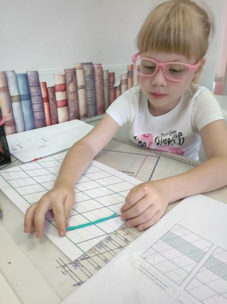
8–12 лет
32 занятия: красивый почерк с правильными соединениями, собранность, внимание, дисциплина.
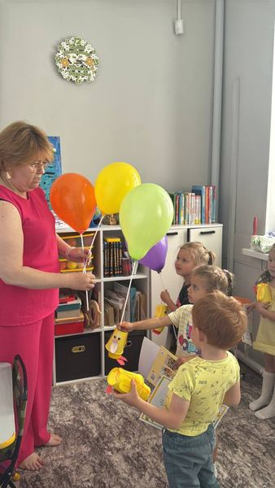
4–17 лет
За 3 летних месяца — программа, на которую обычно уходит 4: скорочтение, каллиграфия, ментальная арифметика, таблица умножения.
Занятия — офлайн на Городецкой, 1А и онлайн. Пробное занятие бесплатно: напишите в сообщения группы возраст ребёнка.
Подход
«Моя задача — не просто подготовить ребёнка к школе, а заложить прочный фундамент его дальнейших успехов».
Родители пишут, что Татьяна Борисовна — «четкий и строгий педагог, который вырабатывает с первых дней дисциплину», и при этом относится к детям «как к родным». Раньше она работала в школе, а теперь ведёт свой кабинет интеллектуального развития.
Из описания курса «Подготовка к школе» и отзывов в 2ГИС
Педагог
Мальцева Татьяна Борисовна ведёт все курсы «PRO Класса». Её называют почти в каждом отзыве.
«Знаю Татьяну Борисовну уже 10 лет! Она учила еще моего старшего сына, а теперь и дочка подрастает!»
Фото
Так написано на нашей фотографии. Снимки — из карточек в 2ГИС и Яндексе.
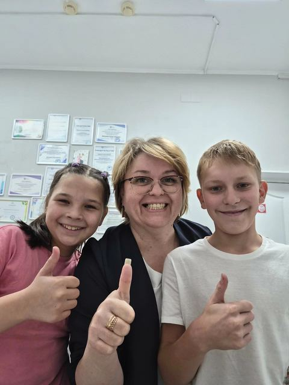
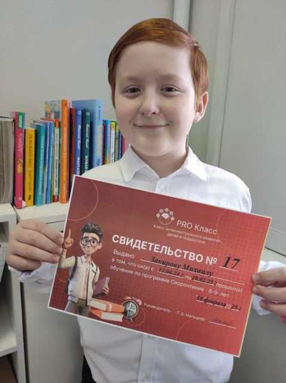
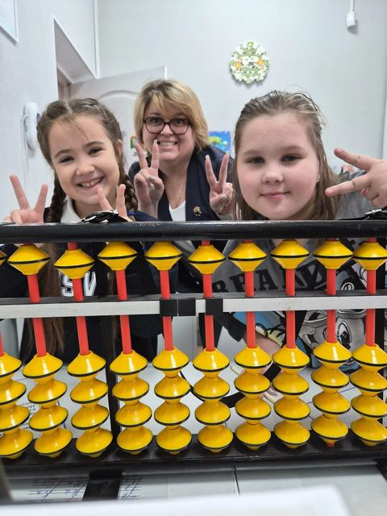
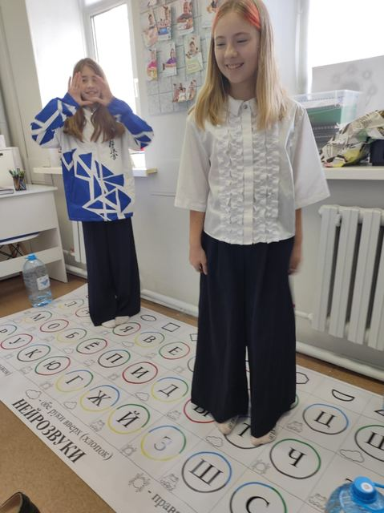
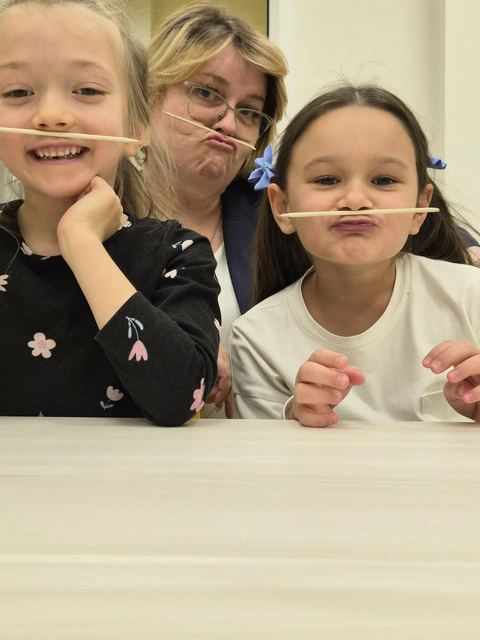
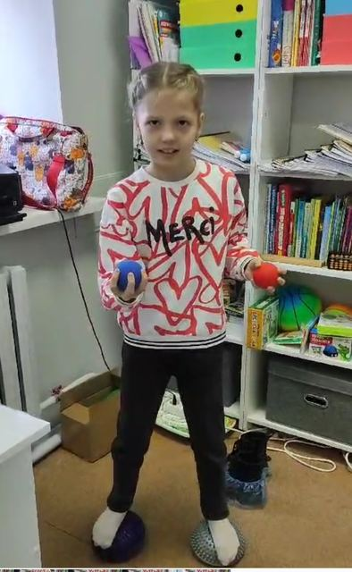
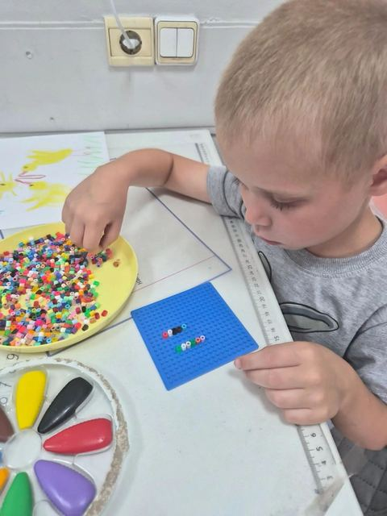
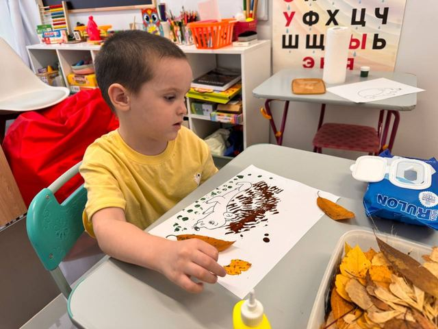
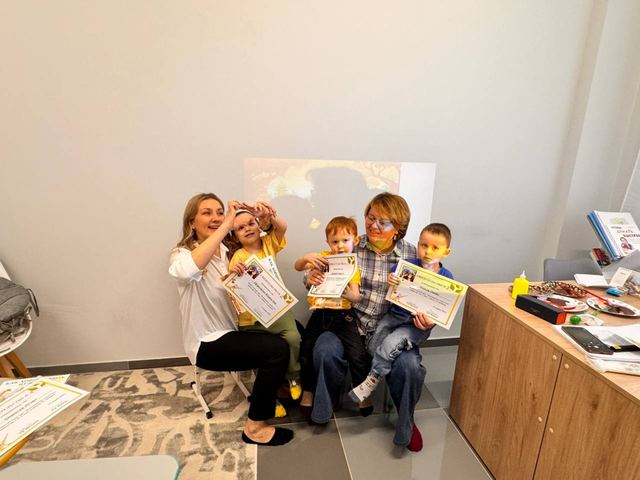
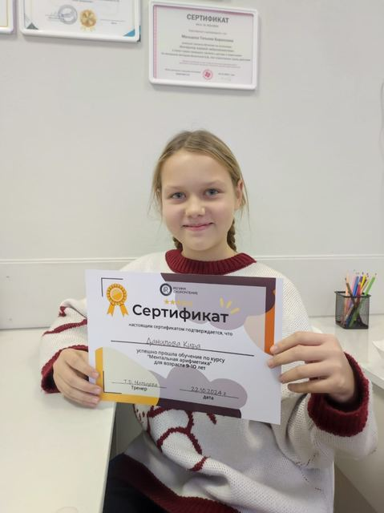
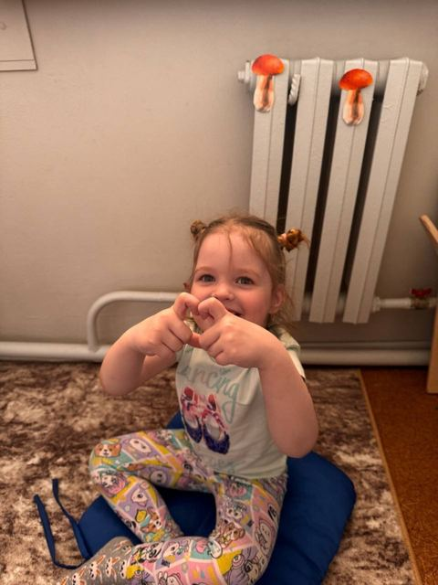
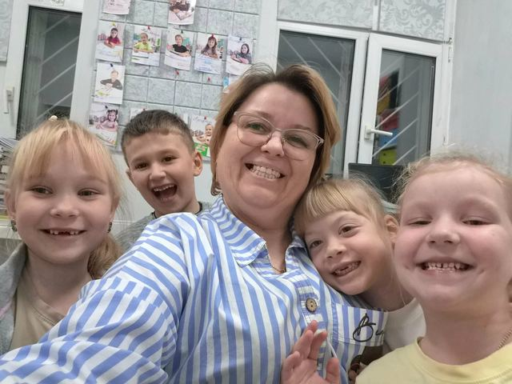
Отзывы
Что пишут родители наших учеников.
Хочу выразить огромную благодарность нашему замечательному педагогу — Татьяне Борисовне! Прошли курс «Подготовка к школе», и результаты просто превзошли все ожидания. Самое важное для меня как для мамы — Жене теперь всё даётся легко. На занятиях не просто дали знания, а реально подняли самооценку ребёнку: дочка поверила в свои силы и идет на уроки с огромным удовольствием. 📈 Наши успехи: 📖 Отличное чтение: разогнались до 53 слов в минуту (и это с полным пониманием!). 🔢 Математика: легко решает примеры в пределах 20. ✍️ Письмо и логика: рука поставлена, логические задачи щелкает как орешки. Татьяна Борисовна, спасибо за ваш профессионализм и чуткость! Теперь я спокойна за школьный старт Жени. Рекомендую всем! ❤️
Хочу от всего сердца поблагодарить Татьяну Борисовну за невероятную работу с моей дочерью Полиной! Когда мы пришли на занятия, девочка совсем не знала букв, и задача казалась почти невыполнимой. Благодаря профессионализму и терпению Татьяны Борисовны, Полина не только освоила чтение с нуля, но и достигла уровня, соответствующего норме второго класса! Это настоящий педагогический подвиг! Особенно хочу отметить индивидуальный подход педагога к обучению. Татьяна Борисовна сумела найти правильный ключ к ребёнку, сделать процесс обучения интересным и увлекательным. Каждое занятие было построено так, чтобы Полина не теряла интерес к учёбе. Методическая база педагога оказалась невероятно эффективной. Использованные техники и упражнения помогли дочери быстро освоить чтение, развить внимание и память. Атмосфера на занятиях всегда была доброжелательной и позитивной. Полина с удовольствием ходила на уроки, а сейчас с гордостью демонстрирует свои успехи в чтении. Рекомендую Татьяну Борисовну как высококвалифицированного специалиста, способного творить настоящие чудеса в обучении чтению. Её профессионализм, терпение и умение находить подход к детям заслуживают самой высокой оценки! Спасибо Вам огромное за труд и заботу о развитии моего ребёнка!
Огромная благодарность Татьяне Борисовне за подготовку нашей Евы к школе! 🎓 Мы начинали «с нуля»: не знали букв, не владели счетом. Благодаря системному подходу и огромному количеству качественного учебного материала, прогресс пошел очень быстро. Это удивительно, но занятия проходят настолько интересно, что ребенок даже не замечает, какую сложную работу выполняет. Через 2 месяца дочка начала читать первые слова и предложения — это была настоящая победа и для неё, и для нас! 📈 Сейчас Ева чувствует себя очень уверенно, у неё появился интерес к книгам и цифрам. Всё очень профессионально, логично и результативно. Татьяна Борисовна дает ценные советы родителям, которые реально работают. Это лучшее вложение в развитие ребенка перед первым классом. Рекомендую всем! 👍
На курс "Скорочтение для детей 6-8 лет" к Татьяне Борисовне я записала дочь, которая знала всего 2-3 буквы алфавита. Ещё не окончили весь курс, а она уже читает!!! , и не просто читает, а старается с выражением, может пересказать прочитанный текст. Полинка с удовольствием ждёт новые занятия, тащит меня в книжные магазины выбирать новую книгу! Я не перестаю удивляться новым успехами дочери и говорить СПАСИБО Татьяне Борисовне за интересные, увлекательные занятия! И для сомневающихся😉 : скорочтение у Татьяны Борисовны - это не просто "занятия про чтение", это всестороннее развитие, это развитие памяти и речи, это новые, интересные, обучающие игры дома с ребенком, это интерес к учёбе и настрой на успех!
Знаю Татьяну Борисовну уже 10 лет! Она учила еще моего старшего сына, а теперь и дочка подрастает! ✨ К сожалению, Татьяна Борисовна больше не работает в школе, но открыла свой кабинет интеллектуального развития детей и подростков. И это невероятно! ✨ Очень рады, что даже после ухода из школы Татьяна Борисовна продолжает заниматься с детьми в своем кабинете. Дочке через год в школу, и мы сразу к ней! Прошли диагностику готовности к школе и стали первыми на курсе "Подготовка к школе"! 🤩 Всего 8 занятий, а восторг у дочки не описать! Всем рассказывает, как здорово заниматься с Татьяной Борисовной! ❤️ За эти занятия у Катюши улучшилась концентрация внимания, зрительная и слуховая память! Сама делает домашние задания (небольшие, но обязательные)! Рекомендую Татьяну Борисовну как высококвалифицированного педагога и любящего детей учителя! 💯
Хочу выразить огромную благодарность преподавателю за ее работу и подход к детям. Мы пришли на занятия за 4 месяца до школы. У сына были серьезные речевые нарушения, и одной из задач было научиться читать перед поступлением в речевую школу. Честно говоря, я переживала, возьмут ли нас вообще на занятия, но преподаватель сначала посмотрела ребенка и сказала, что попробует помочь. В итоге за 3 месяца занятий мы получили результат, который превзошел все мои ожидания. Сын не только научился читать, но и значительно улучшил речь: стал понятнее говорить, лучше выражать свои мысли, объяснять свои желания. Дочка тоже занималась вместе с ним, и у нее появился настоящий интерес к чтению: она читает с пониманием, пересказывает книги, читает вывески. Очень ценю не только результат, но и сам подход. Здесь не просто учат читать — здесь развивают ребенка комплексно: внимание, мышление, память, самостоятельность. Домашние задания построены так, чтобы ребенок учился сам, а не чтобы родитель выполнял задания вместо него. Спасибо огромное за ваш труд, терпение и вклад в развитие моих детей. Для нашей семьи это действительно был огромный шаг вперед. Однозначно рекомендую!
Большое спасибо, Татьяна Борисовна. Развивать ребенка в игровой форме это здорово, всегда интересные занятия, новые впечатления. Таблица умножения за 10 дней в игровой форме это просто супер(без слёз и проблем с запоминанием)Скорочтение-Арина теперь сама берет книгу и читает, ей это интересно. Запоминает стихи на ура.
Мой ребёнок прошёл курс по таблице умножения у Татьяны Борисовны, и результатом мы очень довольны. Материал подаётся интересно и понятно, через истории и образы, поэтому ребёнок запоминает легко и без стресса. Таблица умножения перестала быть проблемой и вызывать страх - наоборот, появилась уверенность и интерес к математике. Татьяна Борисовна, спасибо Вам огромное за Ваш неоценимый труд и терпение💞
София прошла курс "Скорочтение для детей", что помогло ребенку научиться больше концентрироваться, развить внимательность и память. Уроки проходят динамично, интересно, задания разработаны очень хорошо. Много полезных знаний приобретается. Наш преподаватель Татьяна Борисовна - профессионал, имеет авторитет у детей, умеет растить в детях самостоятельность и ответственность. Благодарны Татьяне Борисовне за развитие!
Очень довольны результатом. Читаем, считаем, решаем. Решили ещё пойти на каллиграфию и ментальную арифметику.
Подошёл к концу курс по ментальной арифметике. Дочь всегда с удовольствием посещала занятия. Даже когда болела, выходила на заняти онлайн ( не хотела пропустить урок). Татьяна Борисовна- замечательный педагог. Занятия проходят на позитиве. За десять месяцев ребёнок освоил ментальный счёт и счёт на абакусе ( сложение, вычитание, умножение, деление). Успеваемость в школе повысилась. Спасибо,Татьяна Борисовна. Впереди у нас курс Скорочтения.
Замечательный педагог, интересно и увлекательно проводит занятия. Моя дочь с удовольствием посещала курс "Умножайка", интересный и результативный подход к каждому ребёнку. Спасибо за активное лето.
Вопросы
С 4 лет. Четыре программы: 4–5, 6–7, 8–9 и 10–12 лет, отдельно — для подростков 13–17.
Скорочтение рассчитано на 8 месяцев, занятия 2 раза в неделю. Подготовка к школе — 48 занятий за 6 месяцев.
Да, занятия проходят и офлайн, и онлайн.
Малые группы — 3–4 человека, чтобы у каждого был индивидуальный подход.
Напишите в сообщения группы ВКонтакте возраст ребёнка или позвоните +7 904 375-42-51. Пробное занятие бесплатно.
Контакты
Боровой, Городецкая, 1А. Телефон +7 904 375-42-51.